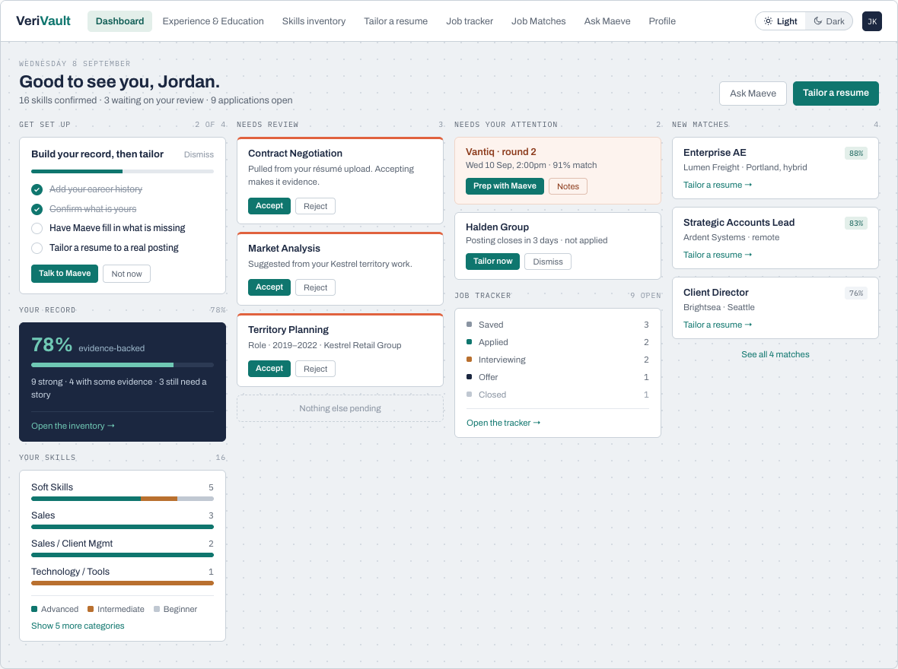
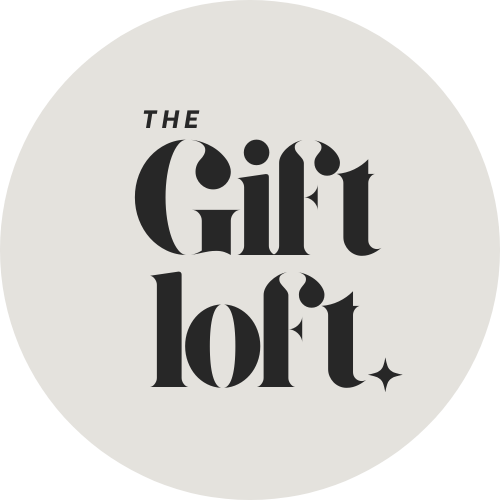

Business analysis · Systems · Data · Process improvement · AI-assisted tools · CRM · E-commerce · Small-business operations
Business systems analyst based in the Kansas City metro, with experience spanning data engineering, project management, operations, Microsoft Power Platform and Dynamics 365, Microsoft 365, e-commerce, and small-business ownership. I translate business needs into practical workflows, requirements, system configurations, and tested solutions—grounded in firsthand experience building brands, serving customers, managing inventory, and running day-to-day operations.
A combination of business analysis, systems thinking, operational experience, and hands-on small-business ownership.
Requirements gathering, stakeholder communication, process mapping, functional documentation, UAT, and traceability
Microsoft Power Platform, Dynamics 365, Dataverse, Microsoft 365 administration, SharePoint, Forms, Power Automate, and Power Apps
SQL, Excel, data validation, financial and sales analysis, reporting, and Power BI fundamentals
Workflow design, requirements development, prototyping, prompt design, testing, and validation
Workflow improvement, CRM administration, process documentation, repeatable workflows, and operational problem-solving
Shopify administration, inventory management, product selection, pricing, visual merchandising, customer experience, order fulfillment, and day-to-day business operations
Brand identity, visual content, product photography, social media, campaign development, customer communication, Canva, and digital storefront design
Helping business owners clarify ideas, organize operations, strengthen their brand presence, improve customer-facing processes, and use practical digital tools more effectively
This portfolio highlights independent and client work I can share publicly. Additional systems, data, operations, and process-improvement projects completed in corporate roles are confidential.
Business analysis · Product design · UI/UX
A career-management product concept designed to help job seekers organize their experience, prepare stronger applications, and manage their search. The public prototype demonstrates the interface with fictional data and simulated behavior.

E-commerce · Small-business operations
An e-commerce business built and operated end to end—including product and collection data, inventory, pricing, merchandising, financial analysis, customer experience, fulfillment, branding, and digital marketing.

Client solutions · Brand systems
Brand identity, packaging, website concepts, and point-of-sale setup for a custom cookie business — a client engagement delivered through Chai Modern Business Solutions.